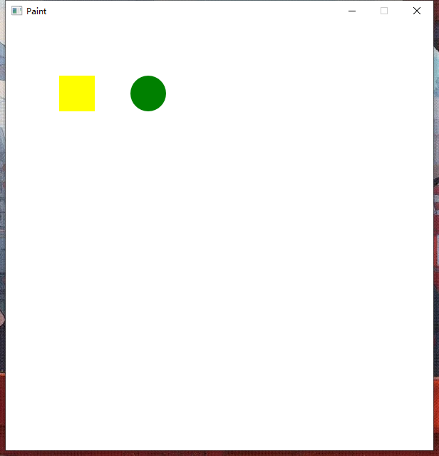

绘制图像
图像的绘制单元
在Helix2D中，图像的绘制是由 画家（Painter）完成的，窗口可以添加需要工作的画家，一个画家，就负责窗口中一个位置的绘画
多个画家，组合成了我们看到的画面
Painter只是一个统称，实际上有负责各种绘制工作的Painter，这次我们就先学习如何在窗口上画一个矩形和圆形
我们用下列代码画一个矩形和圆形：
1 |
|
你会看到下面的画面：

突然出现这么多的代码，可能会有点害怕，但当我们逐个解释各个语句的意思，就很容易理解了
首先，Rect和Circle都是画家，分别负责画矩形和圆形（可能比较精通…），它们分别默认创建一个 边长/直径 为50像素的白色 矩形/圆形
然后，我们修改了它们的颜色，因为背景颜色也是白色不然看不见。
这里呢我们使用了一个新的类：颜色（Color），每个颜色对象都代表一种颜色，一律使用 RGBA 的格式。颜色类给出了一些常用颜色，只需要以Color:: + 颜色名 的方式就可以获取到颜色了
接着，我们又修改了它们在窗口的位置（坐标），在Helix2D中，所有坐标系都是坐标点越向右X越大，越向下Y越大，单位为像素
最后，我们将这两个需要工作的画家添加进窗口，它们就开始绘制我们想要的图像了